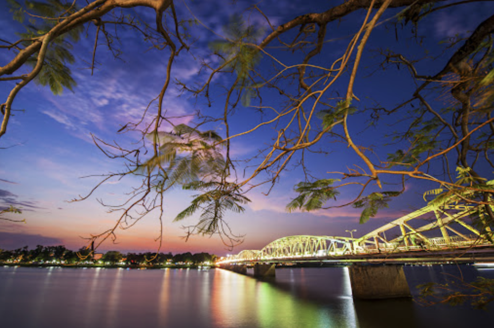
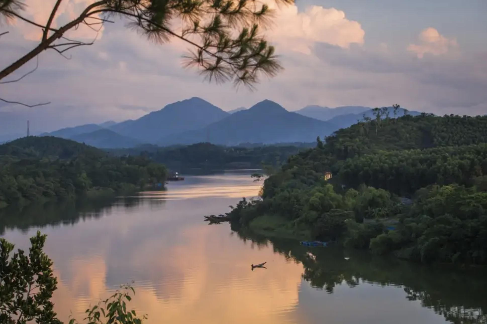

Huế sở hữu nhiều địa danh nổi tiếng, phản ánh rõ nét lịch sử và văn hóa phong phú của thành phố. Kinh thành Huế (Đại Nội), trung tâm quyền lực của triều Nguyễn, là một điểm đến không thể bỏ qua với các công trình kiến trúc hoành tráng.

Bên cạnh đó, các lăng tẩm của các vua Nguyễn như Lăng Gia Long, Lăng Minh Mạng, Lăng Tự Đức và Lăng Khải Định đều là những nơi mang đậm dấu ấn lịch sử.

Chùa Thiên Mụ, nằm ven sông Hương, là một ngôi chùa linh thiêng và cũng là điểm du lịch nổi tiếng.

Cầu Trường Tiền, cây cầu cổ nối hai bờ sông Hương, là một biểu tượng của Huế, đặc biệt đẹp khi lên đèn vào buổi tối.
Đồi Vọng Cảnh là một địa điểm lý tưởng để ngắm nhìn toàn cảnh thành phố và sông Hương.
Hồ Thủy Tiên, mặc dù ít được biết đến nhưng lại có không gian yên tĩnh, là nơi lý tưởng để thư giãn. Mỗi địa danh của Huế đều mang đến những trải nghiệm tuyệt vời, từ lịch sử đến vẻ đẹp thiên nhiên, tạo nên một Huế đầy cuốn hút.